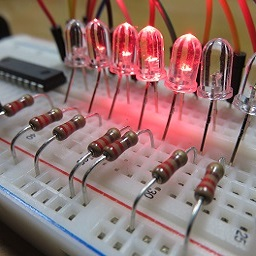
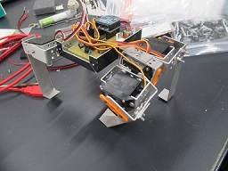
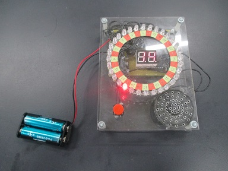
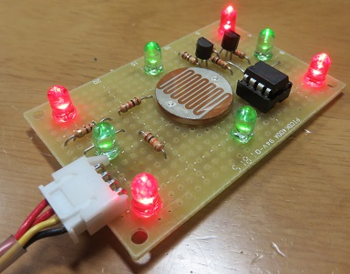
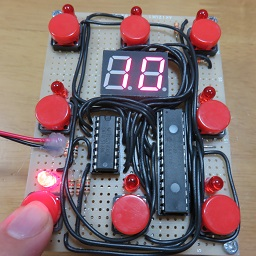

電子工作・マイコン班

班概要
電子部品を組み合わせて回路を作り上げる、電子工作をしています。
製作する回路の多くは、自分たちで設計し、動作の調整をしつつはんだ付けします。
PICという小さなコンピュータを使い、プログラムを組み込むこともあります。
作品は毎年文化祭で展示しています。
ロボット
アルミを切り、回路・PIC・モーターと組み合わせてロボットを作ります。
プログラムから金属加工まで、とても多くの技術を使っています。
製作のハードルは高いですが、完成したときには大きな経験となります。

ライントレーサー
赤外線を床に当て、跳ね返ってくる光の強さを計測することで、
白い紙の上の黒い線を判別します。
左右のモーターの回転数を変えて横に曲がります。
四足歩行ロボット
4つの足のサーボモーターと、肩をねじるサーボモーターで動いています。
サーボモーターとは、軸を指定した角度まで回して維持してくれるモーターです。
中央の基板から各モーターまで、電源2本と信号線の計3本のコードが延びています。
二足歩行ロボット
6つの関節を動かし、左右の足に交互に体重をかけ、反対側の足を前に運ぶ、という動作を繰り返して歩きます。
歩いているだけですが、関節のサーボモータの角度を1歩のうちに20回ほども変えているので、
調整にはかなりの手間がかかりました。
PIC
製作期間は2週間から3ヶ月です。
1年中製作しています。

32ルーレット
タイマとカウンタは汎用ロジックICで構成し、7セグメントディスプレイの表示にはPIC16F627Aを用いました。

レーザー的当て
得点の集計・計算・7セグメントディスプレイの表示にはPIC16F1827を用い、マザーボードとしました。
個々の的では、レーザーが当たっているかどうかを、明るさにより抵抗値が変わるCdSセルという部品で判別し、
PIC12F509でLEDを制御するとともに、マザーボードに信号を送る方式をとりました。
マザーボードと的の間のコードは外せるようになっており、的の個数を変えても動くようになっています。
ストップウォッチ
PIC16F1827を使い、4桁の7セグメントディスプレイに表示しています。
しかし、素直に制御しようとすると、4×7＝28ですから、PIC16F1827で使える15ピンを大幅に上回ってしまいます。
そこで、ダイナミック点灯という方法を使うことにより、表示に必要な桁数を11ピンまで抑えています。
32ルーレット
タイマとカウンタは汎用ロジックICで構成し、7セグメントディスプレイの表示にはPIC16F627Aを用いました。

モグラたたき
18ピンのPIC16F1827では入出力ピン数が足りませんでした。
そこで、28ピンのPIC18F25K22を使い、さらにLEDでの表示にもラインデコーダという汎用ロジックICを使うことで、ピン数を合わせました。
モグラの役割があるLEDが8個なのは、8ビットマシンであるPICで、計算や入出力に都合がよかったためです。
その他
製作期間は1週間から2ヶ月です。
1学期から夏休みに作ることが多いですが、
思い立って別の時期に作ることもあります。
コルピッツ発振回路
コンデンサ・インダクタ・トランジスタを組み合わせ、タイマICを用いない発振回路として製作しました。
この回路の特徴としては、トランジスタ2つを組み合わせたマルチバイブレータという回路によるギザギザした鋸形波ではなく、滑らかな正弦波を出力することです。
実際にオシロスコープで確認したところ、少し歪んでいましたが、正弦波とわかる波が出力されました。
ICラジオ
ラジオの音声を取り出せる半導体が入ったICを使って作りました。
オーロラ
コンデンサに充放電を繰り返し、3色のLEDに流れる電流をそれぞれ違う周期で変化させています。
合わせるとオーロラのような光を得られるという回路です。
デジサイ(10)
この名前は、デジタルサイコロを縮めたものです。
10進カウンタを使い、0から9まで高速で数字を変化させます。
スイッチを離すと、コンデンサから放電が始まり、終わると数字が止まります。
人間には高速で変化する数字を捉えて正確に止めることは難しいので、ある程度ランダムになります。
デジタルサイコロ(6)
この作品は、前の作品と異なり、サイコロの目の形にLEDを配置して表現しています。
当然目は1から6までですが、6進カウンタというものはないので、2進カウンタが110になったことを検知し、カウントを0に戻すことで、疑似的に実現しています。
また、このカウントを論理演算で変換し、サイコロの目を表現しています。